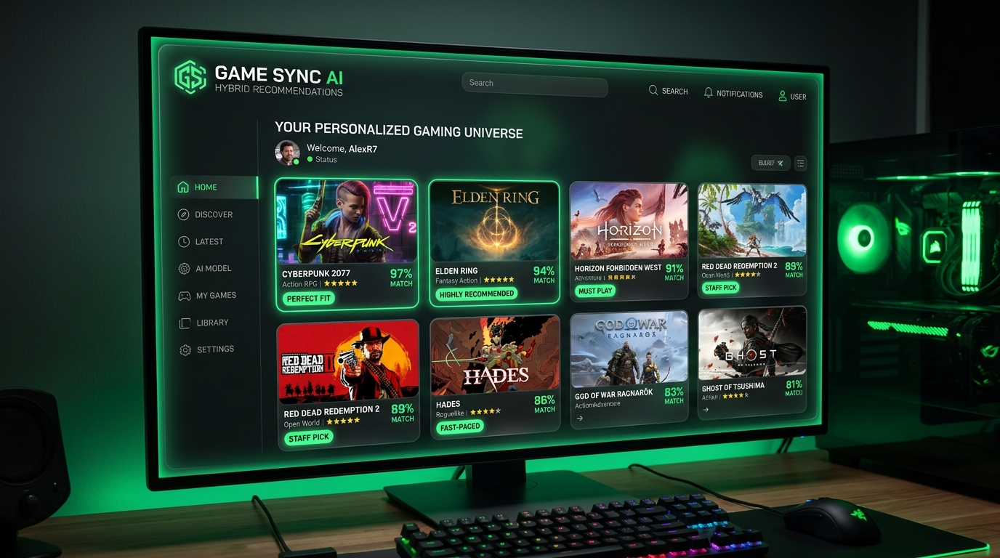
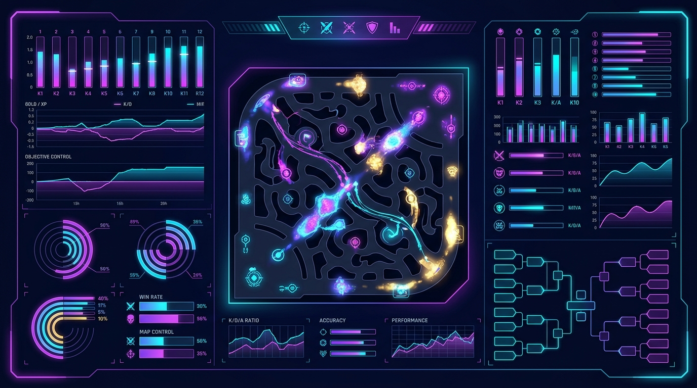
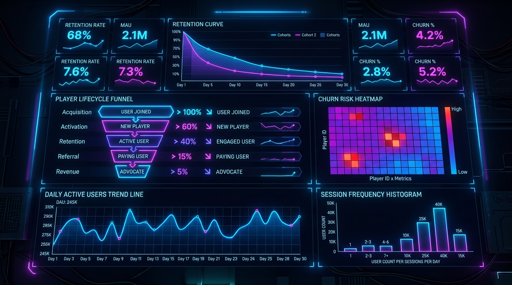

Hi, my name is
Zachary Smith.
I build machine learning models & data pipelines.
I'm a Data Science graduate from Penn State who specializes in predictive modeling, NLP, and pipeline automation. Currently, I'm building end-to-end machine learning solutions, recommendation engines, and analytical dashboards to extract actionable insights from complex datasets.
Check out my projectsAbout Me
Hey! I'm Zach, a data scientist who is passionate about building machine learning solutions to solve real-world problems. I enjoy dissecting complex datasets, optimizing workflows, and turning raw inputs into clean, predictive pipelines.
I recently graduated with a B.S. in Data Science from Penn State, where I focused on statistical modeling and machine learning. Previously, I worked as a Data Science Intern at Pacific Healthworks, where I got to clean messy real-world datasets, automate database pipelines, and build interactive dashboards to help leadership make sense of operations.
Right now, I'm dedicating my time to building open-source ML projects—like recommendation engines, forecasting pipelines, and user retention models. Here are the tools I use to build those solutions:
- Python
- R
- SQL
- MySQL & SSMS
- Tableau
- PyTorch / TensorFlow
- Machine Learning
- LLMs & Embeddings
- Data Visualization
Where I've Worked
Data Science Intern @ Pacific Healthworks
2024 - 2026
- Cleaned and queried healthcare databases using MySQL and SSMS, preparing complex datasets for operational analysis.
- Built interactive Tableau dashboards that helped clinical leadership spot bottlenecks and streamline hospital staffing.
- Automated weekly reporting pipelines, saving hours of manual data formatting every month.
- Collaborated with clinical staff to identify and resolve data inconsistencies, improving database reliability.
Intern @ Career Movement
May 2023 - Aug 2023
- Conducted market research on job trends and industry best practices.
- Developed strong communication skills through cross-functional team and client interactions.
- Performed data entry and organizational tasks to maintain data integrity.
Concession Stand Worker @ Penn State University
2024 - 2025
- Collaborated effectively within team environments to deliver efficient customer service.
- Managed transactions and inventory counts accurately under high-volume pressure during university events.
Some Things I've Built

Featured Project
Semantic Search & Recommendation Engine
A semantic recommendation engine designed to deliver highly accurate catalog matching. I used HuggingFace transformers to generate dense vector embeddings of product descriptions, and built a FAISS vector index to run fast content-based similarity queries, showcasing how modern NLP can optimize discovery.
- Python
- HuggingFace
- Transformers
- SQL
- FAISS

Featured Project
Market Performance & Sentiment Predictor
An end-to-end machine learning pipeline that uses XGBoost to forecast product success based on user reviews and metadata. I built an automated scraping and API-fetching system to collect sales metrics, pricing, and history, performed sentiment analysis (VADER) on feedback descriptions, and trained a classifier to identify success indicators with 85.7% accuracy.
- Python
- REST APIs
- XGBoost
- NLP / VADER
- Matplotlib

Featured Project
User Churn & Retention Predictor
A hybrid predictive pipeline built to identify when active users are likely to drop off. By engineering time-series features like activity velocity and login patterns from daily telemetry logs, the model predicts binary churn states with XGBoost and computes survival curves using Cox Proportional Hazards for cohort retention analytics.
- Python
- XGBoost
- Scikit-Learn
- Pandas
- Survival Analysis
What's Next?
Let's Build Something Great
I'm currently looking for full-time roles in Data Science and Machine Learning Engineering—whether that's predictive modeling, NLP, recommendation engines, or data engineering. If you want to talk about data pipelines (or just want to chat about tech), feel free to drop me a message!
Say Hello